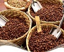

简介
“咖啡”(Coffee)一词源自埃塞俄比亚的一个名叫卡法(kaffa)的小镇，在希腊语中“Kaweh”的意思是“力量与热情”。茶叶与咖啡、可可并称为世界三大饮料。咖啡树是属茜草科常绿小乔木，原产于埃塞俄比亚。
热带、亚热带的常绿小乔木或灌木。叶长卵形，花白色，结深红色浆果。有小果、中果、大果咖啡等。种子炒熟碾成粉可制饮料，有兴奋作用。
日常饮用的咖啡是用咖啡豆配合各种不同的烹煮器具制作出来的，而咖啡豆就是指咖啡树果实内之果仁，再用适当的烘焙方法烘焙而成。 咖啡是由咖啡豆磨制成粉、用热水冲泡而成的饮品。其味苦，却有一种特殊的香气，是西方人的主要饮料之一。
它原产于非洲热带地区，如今在中国云南、广东等省亦有栽培，其种子称“咖啡豆”，炒熟研粉可作饮料，即咖啡。
有知名品牌：高乐雅咖啡、象粪咖啡、麝香猫咖啡、蓝山咖啡、阿里山玛翡咖啡、图兰朵音乐咖啡、摩卡 (Mocha)、苏门答腊曼特宁、夏威夷科纳、巴西咖啡、哥伦比亚特级、肯尼亚AA、哈拉尔咖啡、危地马拉安提瓜、波多黎各尧科等。
两种具有重要经济价值的咖啡
-

阿拉伯种咖啡豆
在高海拔地区，阿拉伯种咖啡生长得最好，这种咖啡的风味比其它咖啡要精致得多，这种咖啡中咖啡因的含量只占咖啡全部重量的1%。 -
东非洲种咖啡豆
东非洲种咖啡滋味醇厚，抵抗病虫害的能力强，单株产量也很高。该种咖啡生长在低海拔地区，味道苦涩。